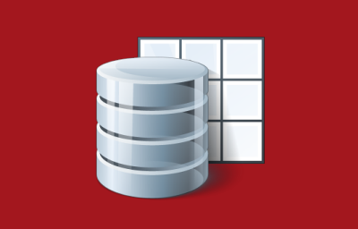

<mat-card>
  <mat-card-content>

    <div id="div_logo">
      
    </div>

    <mat-horizontal-stepper #stepper>

      <ng-template matStepperIcon="edit">
        <mat-icon>check</mat-icon>
      </ng-template>      

      <ng-template matStepperIcon="about">
          <mat-icon>contact_support</mat-icon>
      </ng-template>
      <ng-template matStepperIcon="trustworthy">
          <mat-icon>security</mat-icon>
      </ng-template>
      <ng-template matStepperIcon="data">
          <mat-icon>insert_drive_file</mat-icon>
      </ng-template>
      <ng-template matStepperIcon="scenes">
          <mat-icon>collections</mat-icon>
      </ng-template>
      <ng-template matStepperIcon="views">
          <mat-icon>pageview</mat-icon>
      </ng-template>
      <ng-template matStepperIcon="screenshots">
          <mat-icon>laptop_mac</mat-icon>
      </ng-template>
      <ng-template matStepperIcon="hide">
          <mat-icon>visibility_off</mat-icon>
      </ng-template>

      <mat-step label="About" state="about">
        <mat-card class="info-card">
          <mat-card-header>
            <div mat-card-avatar id="army-knive-image"></div>
            <mat-card-title>About</mat-card-title>
            <mat-card-subtitle>What is Koia and what can it do for me?</mat-card-subtitle>
          </mat-card-header>
          <mat-card-content>
            <p>
              Koia is an <a href="https://angular.io/" target="_blank">Angular</a> based program that anyone can use
              to create simple but stunning charts, summaries and pivot tables out of custom data in just a few minutes.
            </p>
            <p>
              It differs from similar programs mainly in that the context to the original data is never lost. A mouse
              click on a chart element or a summary value, for example, opens a dialog that shows the raw data on which
              the displayed element or value is based. Discover some of the many other features yourself:
              <ul>
                <li>Column filters supporting operators: contains, &lt;, &lt;=, =, &gt;=, &gt;, not empty</li>
                <li>Draggable column value range filters</li>
                <li>Automatic and manual value range grouping</li>
                <li>Customizable grids</li>
                <li>Value sampling</li>
                <li>Exporting charts to PNG images</li>
                <li>Exporting summary tables to Excel</li>
                <li>Pivot tables with drag and drop column support</li>
                <li>etc.</li>
              </ul>
          </mat-card-content>
        </mat-card>
      </mat-step>
      <mat-step label="Trustworthy" state="trustworthy">
        <mat-card class="info-card">
          <mat-card-header>
            <div mat-card-avatar id="shield-image"></div>
            <mat-card-title>Open-source / Closed-data</mat-card-title>
            <mat-card-subtitle>Keep control over the code and your data</mat-card-subtitle>
          </mat-card-header>
          <mat-card-content>
            <p>
              Koia is open-source software and will remain so forever. The source code is <a
                href="https://github.com/centeractive/koia" target="_blank">
                publically available</a> and can be inspected, modified and enhanced by anyone.
              Koia runs on public web servers but it can also easily be installed in your trusted environment.
            </p>
            <p>
              The Koia web application loads static content from a web site but your data
              never flows back to that web site. It only 'travels' between your browser
              and the data storage, without it ever being accessible to any unauthorized third party. You decide whether
              the data is kept locally on your computer or in a private external data storage.
            </p>
          </mat-card-content>
        </mat-card>
      </mat-step>

      <mat-step label="Data" state="data">
        <mat-card class="info-card">
          <mat-card-header>
            <div mat-card-avatar id="data-image"></div>
            <mat-card-title>Data</mat-card-title>
            <mat-card-subtitle>Import your structured data</mat-card-subtitle>
          </mat-card-header>
          <mat-card-content>
            <p>
              Data is loaded from files to the backing data storage through Koia itself or it may be written to it by a
              third party program.
            </p>
            <p>
              The following file types are supported.
            </p>
            <ul>
              <li *ngFor="let reader of readers">
                <p><b>{{ reader.getSourceName() }} ({{ reader.getFileExtension() }})</b><br>
                  {{ reader.getDescription() }}</p>
              </li>
            </ul>
            <p>
              When importing a file, you're granted full control over which portions of the data should be imported.
              You're also in control over...
            </p>
            <ul>
              <li>The data types to be used for storing the values in the data storage</li>
              <li>The format to be applied for displaying certain values</li>
            </ul>
          </mat-card-content>
        </mat-card>
      </mat-step>

      <mat-step label="Scenes" state="scenes">
        <mat-card class="info-card">
          <mat-card-header>
            <div mat-card-avatar id="scene-image"></div>
            <mat-card-title>Scenes</mat-card-title>
            <mat-card-subtitle>Scenes represent individual datasets</mat-card-subtitle>
          </mat-card-header>
          <mat-card-content>
            <p>
              Once loaded to the data storage, individual datasets are each represented by a <b>Scene</b>.
              You can switch between different scenes as you please.
            </p>
            <p>
              Scenes can be given a user-defined name and description. They also contain the following items.
            </p>
            <ul>
              <li>Information about the origin of the loaded data (i.e. file name and modification date).</li>
              <li>A link to the loaded raw data in the data storage.</li>
              <li>The name, data type, width and format of individual data columns.</li>
              <li>View definitions that were saved by the user in order to be restored later on.</li>
            </ul>
          </mat-card-content>
        </mat-card>
      </mat-step>¨

      <mat-step label="Views" state="views">
        <mat-card class="info-card">
          <mat-card-header>
            <div mat-card-avatar id="view-image"></div>
            <mat-card-title>Views</mat-card-title>
            <mat-card-subtitle>Koia offers convenient views on your data</mat-card-subtitle>
          </mat-card-header>
          <mat-card-content>
            <ul>
              <li>The <b>Raw Data</b> table prestents the data in an unprocessed form in pages of adjustable size.
                The table offers sorting and filtering of individual columns.</li>
              <li>The <b>Grid View</b> contains a variable number of elements that are held in a fixed grid of
                customizable dimension. Grid elements (summary tables, charts and graphs) may fit into a single cell or
                they may spread over several columns and rows, it's all up to you. When the window size changes, the
                element size also changes in order to always fit the allocated grid space.
              </li>
              <li>The <b>Flex View</b> contains a variable number of elements (summary tables, charts and graphs) of
                specific size each. When the window size changes, the size of single elements are not changed. The
                elements are however automatically laid out according to the available window space.</li>
              <li>The <b>Pivot Table</b> is a powerful tool to compute, summarize, and analyze data, with revealing
                patterns and trends. It's based on amazing <a href="https://www.npmjs.com/package/pivottable"
                  target="_blank">PivotTable.js</a> that offers many different views (e.g. heatmaps and table barcharts)
                and lets you shape the pivot table through drag and drop of individual columns.</li>
            </ul>
          </mat-card-content>
        </mat-card>
      </mat-step>

      <mat-step label="Screenshots" state="screenshots">
        <mat-card class="info-card">
          <mat-card-header>
            <div mat-card-avatar id="screenshots-image"></div>
            <mat-card-title>Screenshots</mat-card-title>
            <mat-card-subtitle>This is what koia in action may look like</mat-card-subtitle>
          </mat-card-header>
          <mat-card-content>
            <div class="carousel" *ngIf="showScreenshots">
              
            </div>
            <br>
          </mat-card-content>
        </mat-card>
      </mat-step>

      <mat-step label="Hide" state="hide">
      </mat-step>
    </mat-horizontal-stepper>

    <div id="div_action_cards">
      <mat-card class="action-card">
        <mat-card-header>
          <div mat-card-avatar [id]="selectedDataStorage === couchDB ? 'couchdb-image' : 'browser-image'"></div>
          <mat-card-title>Data Storage</mat-card-title>
          <mat-card-subtitle>Define where to store the data</mat-card-subtitle>
        </mat-card-header>
        
        <mat-card-content>
          <p>
            Koia writes and reads data from the browser's internal
            <a href="https://developer.mozilla.org/en/docs/Web/API/IndexedDB_API" target="_blank">IndexedDB</a>
            or from an external <a href="http://couchdb.apache.org/" target="_blank">CouchDB</a> instance.
            The latter has the following advantages.
          </p>
          <ul>
            <li>All data remains available even when the browser cache is cleared.</li>
            <li>The data can be shared with other persons.</li>
          </ul>
        </mat-card-content>

        <mat-card-actions>
          <mat-form-field>
            <mat-select placeholder="Current Data Storage" [(ngModel)]="selectedDataStorage">
              <mat-option *ngFor="let dataStorage of dataStorages" [value]="dataStorage"
                (click)="onDataStorageChanged()">
                {{ dataStorage }}
              </mat-option>
            </mat-select>
          </mat-form-field>
          <button mat-icon-button *ngIf="selectedDataStorage === couchDB" matTooltip="Configure access to CouchDB"
            color="primary" (click)="showDataStoreDefinition()">
            <mat-icon>settings</mat-icon>
          </button>
        </mat-card-actions>
      </mat-card>

      <mat-card class="action-card">
        <mat-card-header>
          <div mat-card-avatar class="koia-logo"></div>
          <mat-card-title>Select Scene</mat-card-title>
          <mat-card-subtitle>Select an existing scene</mat-card-subtitle>
        </mat-card-header>
        
        <mat-card-content>
          <p>
            Select a scene representing data that has previously been imported. You can switch to a different scene or
            create a new one at any time later by pressing the <mat-icon style="vertical-align: middle">collections
            </mat-icon> button in the main toolbar.
          </p>
          <p>
            {{ selectedDataStorage }} currently contains <b>{{ sceneCount }} scenes.</b>
          </p>
        </mat-card-content>
        <mat-card-actions>
          <div class="div_actions">
            <button mat-stroked-button color="primary"
              [disabled]="sceneCount === null || sceneCount === undefined || sceneCount === 0"
              [routerLink]="[urlScenes]">
              <mat-icon>play_circle_filled</mat-icon>
              <span>&nbsp;Start</span>
            </button>
          </div>
        </mat-card-actions>
      </mat-card>

      <mat-card class="action-card">
        <mat-card-header>
          <div mat-card-avatar class="koia-logo"></div>
          <mat-card-title>Create new Scene</mat-card-title>
          <mat-card-subtitle>Import data and create a new scene</mat-card-subtitle>
        </mat-card-header>
        
        <mat-card-content>
          <p>
            This lets you create a new scene from data from a local file.
          </p>
          <p>New scenes may be created or existing ones selected at any time later by pressing the
            <mat-icon style="vertical-align: middle">add_photo_alternate</mat-icon> button in the main toolbar.
          </p>
        </mat-card-content>
        <mat-card-actions>
          <div class="div_actions">
            <button mat-stroked-button color="primary" [routerLink]="[urlScene]">
              <mat-icon>play_circle_filled</mat-icon>
              <span>&nbsp;Start</span>
            </button>
          </div>
        </mat-card-actions>
      </mat-card>
    </div>
  </mat-card-content>
</mat-card>